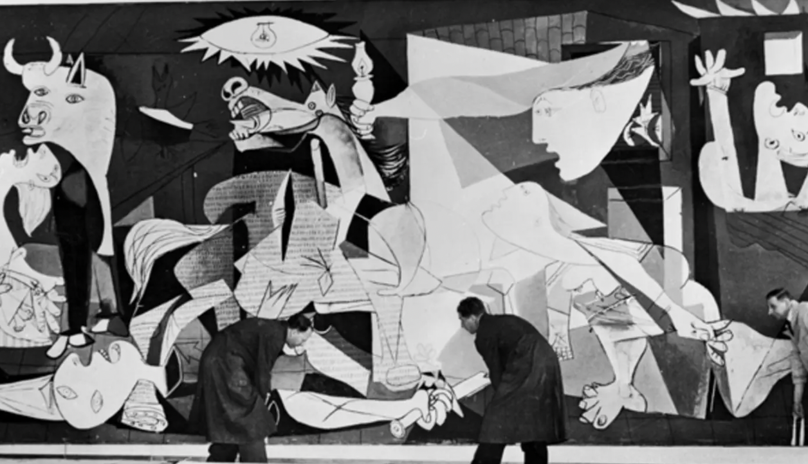
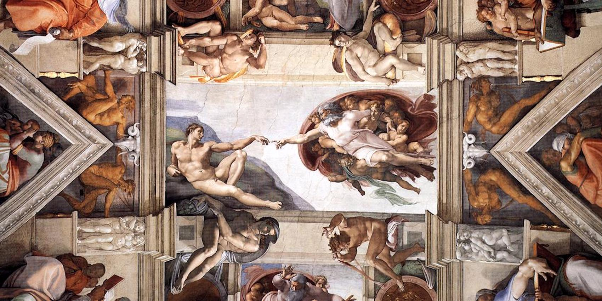
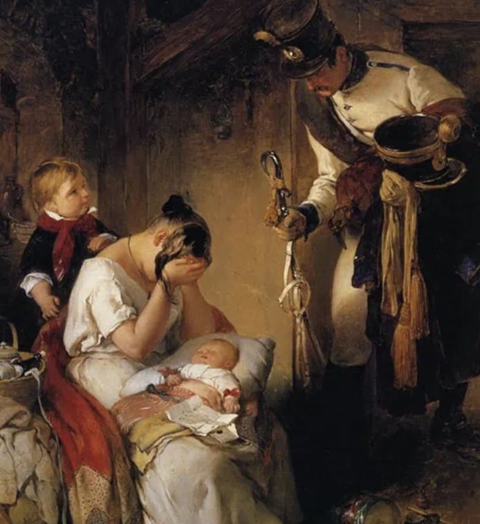

a heightened state of emotion, expression, and authenticity (evoked by art)

"Guernica" by Pablo Picasso (one of the most powerful anti-war paintings)

Sistine Chapel ceiling by Michelangelo

"The Sad Message" by Peter Fendi
It's a late Sunday afternoon, and you lazily stroll through the museum to take in a new artist's latest gallery exhibition. You stroll casually among the pieces of art, glancing at each and taking note of the things that catch your eye: colors, composition, artistic styles. As you turn the corner, you come face to face with a new piece hung at eye level. The moment your gaze lands upon this piece, you understand that it is more than just paint on canvas. Something in this piece of art speaks to your soul. The image you are taking in is stirring up emotions within you. It's absolutely beautiful. The visceral reaction you have to this piece of artwork causes a tear to slip out of the corner of your eye. A singular piece of art has never made you feel this way before. You are moved in a way that you can't even express.